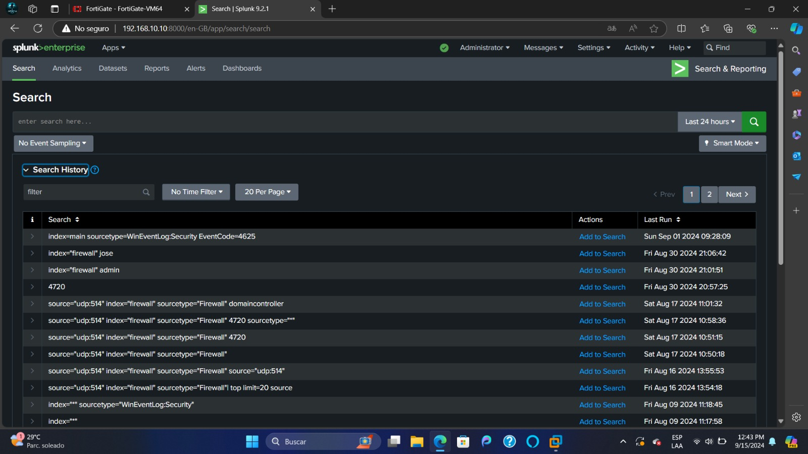
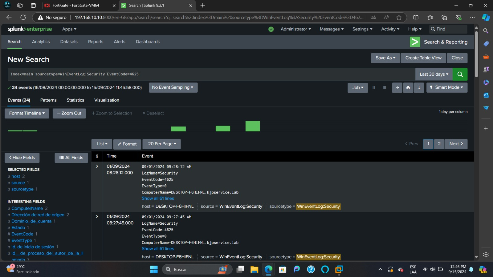

SOC (Security Operations Center) Services Project

Implementation of SOC project for monitoring computer networks.
This project aimed to put into practice the knowledge acquired during the pre-specialization. It was developed collaboratively and focused on monitoring log traffic on end devices connected to the network of a company X. To do this, innovative technologies were used, such as Fortigate (UTM), Splunk (SIEM), network configuration in DMZ and LAN, in addition to the use of virtual machines (Windows Server, Windows 10). Tools such as Sysmon and Splunk Forwarder were also implemented to optimize the analysis and collection of security data.

